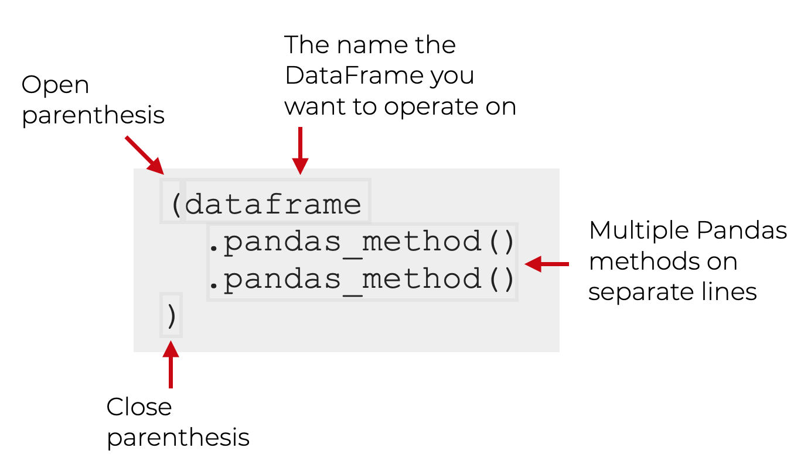

Types of Variables
IN2039: Data Visualization for Decision Making
Department of Industrial Engineering
Agenda
- What type is my data?
- Data manipulation with pandas
Types of variables
Before creating a graph, we must examine the type of values that our dataset variables take.
There are two main types of variables:
Numerical variables.
Categorical variables.
Numerical variables
These take values that represent numerical measurements or quantities.
- Height (in centimeters).
- Weight (in kilograms).
- Age (in years).
- Price (in dollars).
- Time (in hours or seconds).
- Exam score (number of points on a 100-point scale).
Types of numerical variables
Numerical variables are divided into two types:
- Discrete: variables that take integer values.
Examples:
- Number of children (0, 1, 2, or 3)
- Number of students in a class (20, 30, or 35)
- Number of books in a library (10,000, 15,000, 20,000)
- Continuous: variables that have a large range of possible values.
Examples:
- A person’s height (could be within the range of 1.60 m to 1.85 m)
- Ambient temperature (could be within the range of -30 \(^\circ\)C to 50 \(^\circ\)C)
- Time for an Uber to arrive (between 5 and 60 minutes)
Categorical variables
These take values that fall into categories.
A category is a class or division of people or things that share particular characteristics.
| Variable | Categories |
| Amazon review | 1\(\bigstar\), 2\(\bigstar\), 3\(\bigstar\), 4\(\bigstar\), 5\(\bigstar\) |
| Country of origin | México, Canadá, EUA |
| Postal code | 72703, 90034, 3000, … |
Classification of categorical variables
Categorical variables are divided into two important types:
- Nominal
- Ordinal
Nominal categorical variables
A categorical variable is nominal if its categories do not have a specific order.
Examples:
- Political party affiliation (Democrat or Republican).
- Dog breed (Shepherd, Hound, Terrier, Other).
- Computer operating system (Windows, macOS, Linux).
Ordinal categorical variables
A categorical variable is ordinal if its categories do have a meaningful order.
Examples:
- T-shirt size (Small, Medium, Large).
- Education level (High School, University, Postgraduate).
- Income level (Less than $250K, $250K-$500K, More than $500K)
Interesting fact…
Integer values (e.g., 1, 2, 3, …, 5) can represent nominal or ordinal categorical variables.
| Representation | 1 | 2 | 3 | 4 |
| Blood Type | A | B | AB | O |
| Review | Bad | Fair | Good | Very Good |
In practice, boolean values (TRUE and FALSE) often represent nominal categories.
Remember

A general difference is …
Quantitative variables (discrete or continuous) are those where addition or subtraction makes sense.
Categorical variables (nominal or ordinal) are those where addition or subtraction does NOT make sense.
How do we check the type of variable?
As an example, we will use “penguins.xlsx” dataset. Let’s load it using pandas.
In Python, we check the type of each variable in a dataset using the function info().
<class 'pandas.core.frame.DataFrame'>
RangeIndex: 344 entries, 0 to 343
Data columns (total 8 columns):
# Column Non-Null Count Dtype
--- ------ -------------- -----
0 species 344 non-null object
1 island 344 non-null object
2 bill_length_mm 342 non-null float64
3 bill_depth_mm 342 non-null float64
4 flipper_length_mm 342 non-null float64
5 body_mass_g 342 non-null float64
6 sex 333 non-null object
7 year 344 non-null int64
dtypes: float64(4), int64(1), object(3)
memory usage: 21.6+ KBGeneral Python formats
float64format for numerical variables with decimals. It is used for continuous variables.int64format for numerical variables with integers. It is used for discrete variables.objectformat for general variables with characters. It is used for nominal and ordinal variables. However, we must inform Python about this. More on that later.
Activity (solo mode)
Go to the Modules section on our CANVAS website.
Complete the Activity 2.1: Types of Variables individually.
Data manipulation with pandas
Chaining operations with pandas
One of the most important techniques in pandas is chaining, which allows for cleaner and more readable data manipulation.
The general structure of chaining looks like this:
Key pandas methods
pandas provides methods or functions to solve common data manipulation tasks:
.filter()selects specific columns or rows..query()filters observations based on conditions..assign()adds new variables that are functions of existing variables..sort_values()changes the order of rows..agg()reduces multiple values to a single numerical summary.
To practice, we will use the dataset penguins_data.
Selecting columns with .filter()
Select the columns species, body_mass_g and sex.
The axis argument tells .filter() whether to select rows (0) or columns (1) from the dataframe.
The
.head()command allows us to print the first six rows of the newly produced dataframe. We must remove it to have the entire new dataframe.
We can also use .filter() to select rows too. To this end, we set axis = 1. We can select specific rows, such as 0 and 10.
Or, we can select a set of rows using the function range(). For example, let’s select the first 5 rows.
| species | island | bill_length_mm | bill_depth_mm | flipper_length_mm | body_mass_g | sex | year | |
|---|---|---|---|---|---|---|---|---|
| 0 | Adelie | Torgersen | 39.1 | 18.7 | 181.0 | 3750.0 | male | 2007 |
| 1 | Adelie | Torgersen | 39.5 | 17.4 | 186.0 | 3800.0 | female | 2007 |
| 2 | Adelie | Torgersen | 40.3 | 18.0 | 195.0 | 3250.0 | female | 2007 |
| 3 | Adelie | Torgersen | NaN | NaN | NaN | NaN | NaN | 2007 |
| 4 | Adelie | Torgersen | 36.7 | 19.3 | 193.0 | 3450.0 | female | 2007 |
Filtering rows with .query()
An alternative way of selecting rows is .query(). Compared to .filter(), .query() allows us to filter the data using statements or queries involving the variables.
For example, let’s filter the data for the species “Gentoo.”
| species | island | bill_length_mm | bill_depth_mm | flipper_length_mm | body_mass_g | sex | year | |
|---|---|---|---|---|---|---|---|---|
| 152 | Gentoo | Biscoe | 46.1 | 13.2 | 211.0 | 4500.0 | female | 2007 |
| 153 | Gentoo | Biscoe | 50.0 | 16.3 | 230.0 | 5700.0 | male | 2007 |
| 154 | Gentoo | Biscoe | 48.7 | 14.1 | 210.0 | 4450.0 | female | 2007 |
| 155 | Gentoo | Biscoe | 50.0 | 15.2 | 218.0 | 5700.0 | male | 2007 |
| 156 | Gentoo | Biscoe | 47.6 | 14.5 | 215.0 | 5400.0 | male | 2007 |
We can also filter the data to get penguins with a body mass greater than 5000g.
| species | island | bill_length_mm | bill_depth_mm | flipper_length_mm | body_mass_g | sex | year | |
|---|---|---|---|---|---|---|---|---|
| 153 | Gentoo | Biscoe | 50.0 | 16.3 | 230.0 | 5700.0 | male | 2007 |
| 155 | Gentoo | Biscoe | 50.0 | 15.2 | 218.0 | 5700.0 | male | 2007 |
| 156 | Gentoo | Biscoe | 47.6 | 14.5 | 215.0 | 5400.0 | male | 2007 |
| 159 | Gentoo | Biscoe | 46.7 | 15.3 | 219.0 | 5200.0 | male | 2007 |
| 161 | Gentoo | Biscoe | 46.8 | 15.4 | 215.0 | 5150.0 | male | 2007 |
We can even combine .filter() and .query(). For example, let’s select the columns species, body_mass_g and sex, then filter the data for the “Gentoo” species.
Create new columns with .assign()
With .assign(), we can create new columns (variables) that are functions of existing ones. This function uses a special Python keyword called lambda. Technically, this keyword defines an anonymous function.
For example, we create a new variable LDRatio equaling the ratio of bill_length_mm and bill_depth_mm.
In this code, the df after lambda indicates that the dataframe (penguins_data) will be referred to as df inside the function. The colon : sets the start of the function.
The code appends the new variable to the end of the resulting dataframe.
We can see the new variable using .filter().
Sorting with .sort_values()
We can sort the data based on a column like bill_length_mm.
| species | island | bill_length_mm | bill_depth_mm | flipper_length_mm | body_mass_g | sex | year | |
|---|---|---|---|---|---|---|---|---|
| 142 | Adelie | Dream | 32.1 | 15.5 | 188.0 | 3050.0 | female | 2009 |
| 98 | Adelie | Dream | 33.1 | 16.1 | 178.0 | 2900.0 | female | 2008 |
| 70 | Adelie | Torgersen | 33.5 | 19.0 | 190.0 | 3600.0 | female | 2008 |
| 92 | Adelie | Dream | 34.0 | 17.1 | 185.0 | 3400.0 | female | 2008 |
To sort in descending order, use ascending=False inside sort_values().
| species | island | bill_length_mm | bill_depth_mm | flipper_length_mm | body_mass_g | sex | year | |
|---|---|---|---|---|---|---|---|---|
| 185 | Gentoo | Biscoe | 59.6 | 17.0 | 230.0 | 6050.0 | male | 2007 |
| 293 | Chinstrap | Dream | 58.0 | 17.8 | 181.0 | 3700.0 | female | 2007 |
| 253 | Gentoo | Biscoe | 55.9 | 17.0 | 228.0 | 5600.0 | male | 2009 |
| 339 | Chinstrap | Dream | 55.8 | 19.8 | 207.0 | 4000.0 | male | 2009 |
| 267 | Gentoo | Biscoe | 55.1 | 16.0 | 230.0 | 5850.0 | male | 2009 |
Summarizing with .agg()
We can calculate summary statistics of the columns bill_length_mm, bill_depth_mm, and body_mass_g.
(penguins_data
.filter(["bill_length_mm", "bill_depth_mm", "body_mass_g"], axis = 1)
.agg(["mean"])
)| bill_length_mm | bill_depth_mm | body_mass_g | |
|---|---|---|---|
| mean | 43.92193 | 17.15117 | 4201.754386 |
By default,
agg()ignores missing values.
Saving results in new objects
After performing operations on our data, we can save the modified dataset as a new object.
More on pandas

Final remarks
- pandas is a Python library for data manipulation.
- Understanding variable types helps determine the best operations and visualizations.
- There are specific charts for numerical and categorical variables.
- Throughout this course, we will explore various visualizations for different types of data.
Return to main page

Tecnologico de Monterrey